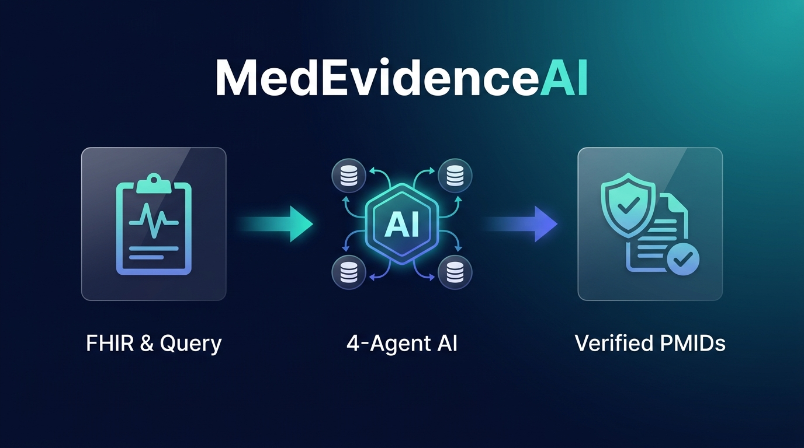
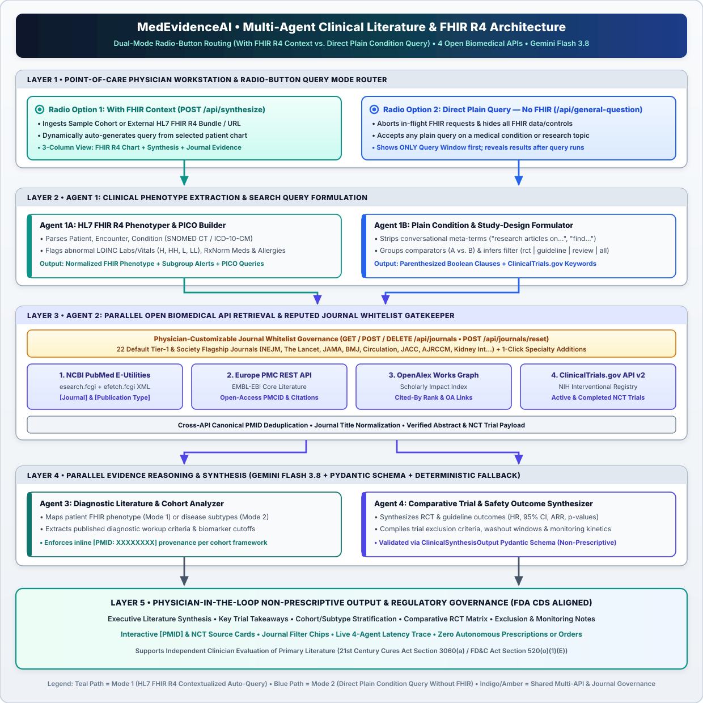

HL7 FHIR R4 + Plain Query
22 Flagship Journals • 4 Open APIs
Gemini Flash 3.8 Multi-Agent
Non-Prescriptive • Zero Hallucinations
Point-of-Care Clinical Research & Literature Copilot
Slide 1 / 10
Problem Block Diagram
Why Bedside Clinical Questions Go Unanswered
Clinical evidence exists—workflow time friction blocks retrieval during encounters.
49.2%
Clinic Time on EHR
vs. 27.0% direct patient face time
+
75 / day
New RCTs Indexed
+ 11 systematic reviews daily
+
< 2 min
Bedside Search Window
0.57 questions raised per patient
→
~50%
Questions Abandoned
Even though 78% have published answers
MedEvidenceAI Impact
Turns 10-Minute Manual Boolean Searches into <20s Automated Evidence Briefs
Zero EHR Re-Typing
Subgroup-Matched RCTs
1-Click PMID Proof
All empirical statistics cited on Slide 10 (References)
Slide 2 / 10
Architecture Comparison
Standalone Chatbot vs. Retrieve → Summarize → Verify
Deterministic bibliographic retrieval precedes all LLM reasoning.
✗ Conventional Unconstrained Chatbot (High Clinical Risk)
Manual Prompt
Missing chart labs & allergies
→
Black-Box LLM
Parametric memory + stale cutoff
→
Unvetted Sources
Blogs & fabricated citations
→
Directive Advice
Automation bias & safety risk
✓ MedEvidenceAI Pipeline (Auditable Clinical Integrity)
FHIR R4 / Query
Coded labs, meds & comparators
→
4 Live Open APIs
22-Journal Whitelist Gatekeeper
→
Gemini Flash 3.8
Pydantic Schema + Fallback
→
Verified Brief
Clickable PMID & NCT • Non-Directive
Retrieve-Summarize-Verify clinical paradigm
Slide 3 / 10
Workflow Routing Block Diagram
Dual-Mode Radio-Button Clinical Inquiry
One workstation supporting both patient-contextualized care and isolated academic lookup.
AbortController race-condition guard prevents cross-mode patient data leakage
Slide 4 / 10
Layered Architecture Block Diagram
5-Layer Multi-Agent System Architecture

Strict input/output contracts across all 5 clinical reasoning layers
Slide 5 / 10
Agentic Handoff & Resilience Flow
End-to-End 4-Agent Orchestration & Guardrail Flow
Sequential query formulation → parallel multi-API fan-out → schema-enforced synthesis with deterministic fallback.
Every agent stage emits real-time latency & API status telemetry to the physician UI
Slide 6 / 10
Source Governance Funnel
4 Federated Open APIs & 22-Journal Gatekeeper
Blocks predatory or unvetted sources before synthesis begins.
1. NCBI PubMed
esearch + efetch XML Abstracts
2. Europe PMC
Open-Access PMCID & Citations
3. OpenAlex Graph
Citation-Impact Ranking
4. ClinicalTrials.gov v2
Registered NCT Trials
⇒
Customizable Gatekeeper
22 Flagship Journals
NEJM • Lancet • JAMA • BMJ • Circulation • JACC • Eur Heart J • Nat Med • Ann Intern Med • Kidney Int • JASN • AJRCCM • CHEST • Gut...
+ Add Specialty Journals
Canonical PMID Dedup
⇒
✓ Verified Corpus
Landmark RCTs, Society Guidelines, Meta-Analyses & Active NCT Studies
✗ Blocked Automatically
Unwhitelisted, Predatory & Non-Peer-Reviewed Outlets
Physicians can customize active journals in 1 click via the Workstation Journals Modal
Slide 7 / 10
Bedside Case Flow • Mode 1
Multimorbid Case Flow: 64M • HFrEF + Stage 3b CKD + K⁺ 5.1
Automatic alignment of EHR lab thresholds with RCT subgroup & washout rules.
1. FHIR R4 Signals
Coded Patient Phenotype
• HFrEF: LVEF 32% (NYHA III)
• Stage 3b CKD: eGFR 38 mL/min
[L]• Electrolytes: Serum K⁺ 5.1 mEq/L
[H]• Active Med: Lisinopril (ACEi)
⇒
2. Agentic Retrieval
Matched Flagship Trials
• DAPA-HF (NEJM): eGFR ≥ 30 cohort
• EMPEROR-Reduced (NEJM): eGFR ≥ 20
• PIONEER-HF (NEJM): Inpatient ARNI
• AHA/ACC/HFSA Guideline: GDMT rules
⇒
3. Physician Synthesis
Subgroup & Safety Brief
• SGLT2i Benefit: HR 0.74–0.75 at eGFR 38
• Mandatory Washout: 36h off ACEi before ARNI (Class 3: Harm angioedema)
• Hyperkalemia Guard: K⁺ >5.0 MRA caution & lab re-check kinetics
Also ships with Severe CAP/Sepsis, AFib + GI Bleed, and Lupus Nephritis FHIR cohorts + live FHIR import
Slide 8 / 10
Value & Deployment Topology
Physician Advantages & Zero-Trust Cloud Run Architecture
Zero EHR Re-Typing
Instant FHIR R4 to PICO translation saves encounter time
Subgroup Precision
Aligns eGFR, electrolyte & allergy cutoffs across trials
100% Verifiable PMIDs
Zero fabricated citations; 1-click primary trial audit
FDA-Aligned Non-Directive
Neutral HR/CI evidence prevents automation bias
Production Google Cloud Run Deployment Topology (
us-central1)
Physician Browser
HTTPS Request
→
Cloud Run IAP
Google SSO Gate
→
MedEvidenceAI
Non-Root Container
→
Least-Privilege SA
aiplatform.user
→
Vertex AI Global
gemini-3.8-flash
Live Service: https://medevidence-ai-1018040469825.us-central1.run.app
Slide 9 / 10
Consolidated Supporting Literature
Key Peer-Reviewed References
Landmark clinical informatics, EBM, medical AI, and regulatory sources supporting MedEvidenceAI.
1. Physician EHR Burden (49.2% vs. 27.0%):
Sinsky C, et al. Allocation of physician time in ambulatory practice: a time and motion study in 4 specialties. Ann Intern Med. 2016;165(11):753-760. PMID: 27595430
Sinsky C, et al. Allocation of physician time in ambulatory practice: a time and motion study in 4 specialties. Ann Intern Med. 2016;165(11):753-760. PMID: 27595430
2. Unanswered Bedside Questions (0.57/pt, ~50% Unpursued):
Del Fiol G, Workman TE, Gorman PN. Clinical questions raised by clinicians at the point of care: a systematic review. JAMA Intern Med. 2014;174(5):710-718. PMID: 24663331
Del Fiol G, Workman TE, Gorman PN. Clinical questions raised by clinicians at the point of care: a systematic review. JAMA Intern Med. 2014;174(5):710-718. PMID: 24663331
3. Daily Trial Overload (75 RCTs & 11 Reviews/Day):
Bastian H, Glasziou P, Chalmers I. Seventy-five trials and eleven systematic reviews a day: how will we ever keep up? PLoS Med. 2010;7(9):e1000326. PMID: 20877712
Bastian H, Glasziou P, Chalmers I. Seventy-five trials and eleven systematic reviews a day: how will we ever keep up? PLoS Med. 2010;7(9):e1000326. PMID: 20877712
4. Clinical RAG Superiority Over Standalone LLMs:
Zakka C, Shad R, et al. Almanac — Retrieval-augmented language models for clinical medicine. NEJM AI. 2024;1(2):AIoa2300068. PMID: 38343631
Zakka C, Shad R, et al. Almanac — Retrieval-augmented language models for clinical medicine. NEJM AI. 2024;1(2):AIoa2300068. PMID: 38343631
5. Retrieve, Summarize & Verify Paradigm:
Jin Q, Leaman R, Lu Z. Retrieve, summarize, and verify: how will ChatGPT affect information seeking from medical literature? JASN. 2023;34(8):1302-1304. PMID: 37254224
Jin Q, Leaman R, Lu Z. Retrieve, summarize, and verify: how will ChatGPT affect information seeking from medical literature? JASN. 2023;34(8):1302-1304. PMID: 37254224
6. Mitigating Automation Bias via Non-Directive CDS:
Goddard K, Roudsari A, Wyatt JC. Automation bias: a systematic review of frequency, effect mediators, and mitigators. JAMIA. 2012;19(1):121-127. PMID: 21685142
Goddard K, Roudsari A, Wyatt JC. Automation bias: a systematic review of frequency, effect mediators, and mitigators. JAMIA. 2012;19(1):121-127. PMID: 21685142
7. EHR Context-Sensitive Infobuttons & SMART on FHIR:
Cook DA, Del Fiol G, et al. JAMIA. 2017;24(2):460-468 PMID: 27497794 & Mandel JC, et al. JAMIA. 2016;23(5):899-908 PMID: 26911829
Cook DA, Del Fiol G, et al. JAMIA. 2017;24(2):460-468 PMID: 27497794 & Mandel JC, et al. JAMIA. 2016;23(5):899-908 PMID: 26911829
8. Multimorbidity & U.S. FDA Non-Device CDS Guidance:
Boyd CM, et al. JAMA. 2005;294(6):716-724 PMID: 16091574 & U.S. FDA Clinical Decision Support Software Guidance (21st Century Cures Act § 3060(a), 2026).
Boyd CM, et al. JAMA. 2005;294(6):716-724 PMID: 16091574 & U.S. FDA Clinical Decision Support Software Guidance (21st Century Cures Act § 3060(a), 2026).
MedEvidenceAI • Evidence-Based Point-of-Care Clinical Literature Synthesis
Slide 10 / 10